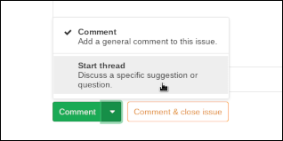

Tails issues and code are managed in GitLab.
This page focuses on aspects of GitLab usage that are specific to Tails.
This workflow is not set in stone: it will evolve based on what we learn while using GitLab.
For general GitLab usage information, see the GitLab user documentation.
Getting started
If you were using Redmine previously, read how to transition to GitLab. Else, to create your GitLab account, visit the registration page in a web browser. If you want, you can add your pronouns to your GitLab account so that your pronouns appear next to your name in your profile. Also, your pronouns will appear when someone hovers over your GitLab username.
Once you have created your GitLab account, you will be allowed to open new issues, create merge requests, and fork your own copy of our repositories.
Later on, you will probably need to:
- Add your SSH key to your GitLab account
- Request more credentials
The first time you connect over SSH to a Git repository hosted on our GitLab, you will be prompted to verify the server's SSH host key. Here are the corresponding fingerprints:
- ECDSA:
SHA256:AOj9ec6hRjN7fNnjXMlmPum7dZWRd5oJKAuo4UGAxxs - Ed25519:
SHA256:mtZeDs2+KKLZ8kJOvmrGoTCuszqc29DOyH6MZaqtlss - RSA:
SHA256:JuwD+e+wOas+2JtDdF0BHu+9RAIJOhWI+2VkjuZ6Znk
Two-factor authentication
Access to some of our repositories requires you to enable two-factor authentication (2FA) for your GitLab account.
To learn how to enable 2FA for your GitLab account, read the GitLab documentation on two-factor authentication.
GitLab supports time-based one-time passwords (TOTPs) for two-factor authentication. You can use KeePassXC in Tails to generate TOTPs.
To use KeePassXC in Tails to generate TOTPs:
- Create a password database to store the secrets needed to generate TOTPs. To maximize security, this database should be separate from the database that you use to store your passwords. Learn more.
- Add a new password entry for the account that you want to generate TOTPs for.
- Choose .
- Enter your secret key for generating TOTPs. Do not include any spaces.
- If you are setting up TOTPs for GitLab, choose Default RFC 6238 token settings.
Group and projects
All our work is tracked in projects under the tails group.
The main Git repository and most issues live in the tails/tails project.
How we use GitLab metadata
On GitLab, issues and merge requests have metadata.
Being consistent in the use of GitLab metadata makes collective work smoother.
Title and description
The title should be a short but clear description of what this is about. Some people are case sensitive, please try to consider that.
Status
Open issues
Each open issue can have up to 1 status label:
To Do: it would be good if someone worked on this issue
Doing: someone is actively working on this issue
Needs Validation: a resolution has been proposed and needs to be reviewed. For details, see our merge policy.
The main advantage of using these labels is to organize and visualize issues on Issue Boards.
Some teams use a workflow that depends on accurately using these labels.
Apart of that, you may consider these labels as optional.
Closed issues
Closing an issue means one of:
The bugfix or feature the issue is about:
- was merged and will be in a future release
- or is already available to our users
The Milestone value tells in which case we are.
We've rejected it.
For example: it does not fit into Tails' mission, or the problem shall be resolved elsewhere than in Tails.
To reject an issue, create a comment that:
- explains why you're rejecting it
- adds the Rejected label (
/label ~Rejected)
It duplicates another issue.
To mark an issue as a duplicate, create a comment that:
- mentions the other, duplicated issue
- adds the Duplicate label (
/label ~Duplicate)
Assignee
We use the Assignee field in a way that helps us organize our work as a team, focus on what matters most currently, and avoid individual over-commitment & feelings of failure.
To this aim, most tasks should be up for grabs for anyone who has spare capacity and the required skills: Don't Lick the Cookie.
So in general, issues and merge requests should not be assigned to anyone.
This being said, we do assign them if at least one of these conditions is met:
Someone is actively working on it.
The task is both important and urgent.
The milestone is set to the next Tails release. See the milestone section for details.
We did all the work we could on this task already and now have to track progress on a blocker that we cannot address ourselves. For example, regularly tracking progress and pinging on patches we've submitted upstream.
Only one of us can complete the task. This helps identify bottlenecks, high bus factor, and over-commitment.
Sponsor deliverables that are managed under the "let's decide a long time in advance who exactly will do each task" paradigm.
It is about the parent tracking issue for a large project with several subtasks that will be tackled by different people, and we need someone to coordinate the project.
Milestone
Different teams and contributors use the Milestone value differently:
- Some teams try their best to treat it as a commitment, that other Tails contributors should be able to rely on.
- Others use it as a pool of tasks they want to have on their short-term radar.
For issues that are on the Tails roadmap, no milestone is set,
until it makes sense to target a specific release. However, such issues
have a $YEAR label.
Postponing to the next milestone more than once is not business as usual — it's a red flag. Ideally, the underlying problem should be identified and addressed: for example, the assignee might need help or be over-committed; the team could be under-staffed; or perhaps the task should simply not have any milestone in the first place.
Priority
Every open issue must have exactly 0 or 1 of these labels:
- P:Low: it would be good to do this, but it's unlikely that current Tails contributors find time to work on it any time soon
- P:Normal, or no such label: this is the general case
- P:Elevated
- P:High
- P:Urgent
See the list of priority labels.
Category
We classify issues with labels whose name starts with C:.
For example, C:Email Client or C:Installation.
See the list of category labels.
Type of work
To indicate the type of work that's needed to complete the next step on an issue, we use labels whose name starts with T:.
For example:
- T:Debian: the work shall be done in Debian
- T:End-user documentation: everything below doc and support on our website
- T:Contributors documentation: everything below contribute on our website
- T:Wait: we are waiting/tracking actions we need non-Tails people to do, outside of Tails
- T:Website: website work not covered by other options
See the list of type of work labels.
Other labels
- Starter: issues flagged as Starter can be a good pick for new contributors. Learn more.
Relationships between issues
Arguably, GitLab CE is a bit limited when it comes to expressing semantic relationships between issues. Here is how we can overcome these limitations.
Parent/subtask and Blocks relationship
A GitLab issue can have a task list.
Every task is a task list can be:
free-form text
a
#NNNNlink to another issue, that needs to be closed before the issue with the task list can itself be closed.
Related issues
You can list related issues either in the description or in a comment.
Either way, this adds a message in the Activity stream of the referenced issue, with a link to the referencing issue.
Confidential issues
You can make an issue confidential when creating it or at any later time.
A confidential issue is visible only by:
- whoever created it
- project members with at least Reporter access; that is, for our main GitLab project: most past and present Tails contributors
If your team regularly manipulates confidential data, then its issues live under a dedicated GitLab project, with a different set of members, and possibly only visible to project members.
How to document progress
Create and update issues
When you start working on a task, update the corresponding GitLab issue, after creating one if needed: replace any status label with the Doing label. For details about labels, see metadata.
All the knowledge useful to the others should be kept on that issue, or at least linked from there.
Please keep the issues you are working on updated, so that they reflect the actual status of the task, and especially the next thing to do for it to be completed.
When committing changes that will resolve an issue once merged, please
include #NNNN in the commit message, NNNN
being the issue number. Then, GitLab will automatically reference this
commit on the corresponding issue, once the branch is pushed to our
Git repository. For example:
Remove tails@boum.org duty from frontdesk (#8420)
Report progress or failure
It is important to:
- Keep the team informed of how you feel committed to issues assigned to you, and about the timeline you're envisioning.
- Avoid individual over-commitment & feelings of failure.
If you don't think you will manage to work on an issue any time soon, it's often best to make this clear on the issue, or to de-assign yourself.
For details, see how we use the assignee and milestone information.
How to propose, review, and merge changes
We use Merge Requests (aka. MRs) to propose, review, and merge changes.
See:
How to request and provide input
How to participate in discussions
You can comment on issues and merge requests. Our code of conduct applies.
If you want to start a new discussion, please use Start thread instead of Comment: a thread can be marked as resolved, while a comment cannot. This helps keeping track of which discussions have reached a conclusion, and which ones are still pending.
To start a thread, type your message and choose Start thread in the Comment split button.

For more information, see the GitLab documentation about Discussions.
Requesting input from someone else
If you need input from someone else on an issue or merge request,
ask your question in a comment there, mentioning them
with their GitLab login name: @nick. GitLab will send them
an email notification about it and add it to their To-Do list.
If you want to raise attention of every single member of a team, mention it with
the name of the corresponding group:
@xyz-team. GitLab will send an email notification about it to every member
of this group, and add it to their To-Do list.
Please note that the root user is part of all groups only because it is used
for the administration of our GitLab instance. There's no human being behind
that account and its notifications are turned off. Do not expect to receive
answers from that user, make sure to mention other appropriate users and groups
instead.
Acting upon input requests
It's important to provide requested information as quickly as you can, to make the Tails contribution process more efficient and enjoyable.
When input is requested from you on an issue or merge request with @nick:
GitLab adds an item in your To-Do list.
GitLab may send you an email notification
Please ensure your GitLab email notification settings and your email setup allow you to receive and notice these messages.
When you receive such a request, if you cannot provide the requested input immediately, you're responsible for keeping track of this task, for example via the To-Do list, or by creating a new issue assigned to yourself, or using whatever personal organization tools work for you.
Email interface
Using the email address registered with your GitLab account, you can:
Stay informed of what's happening in GitLab
To do so, enable email notifications.
Participate in discussions on issues and merge requests, modify issues metadata
To do so, reply to an email notification you've received from GitLab.
Write your email just as if you [replied from the web]. In particular:
- Write your email in Markdown.
- You can use Quick actions.
Create new issues
See New issue via email in the GitLab documentation.
Scripts that use the GitLab API
We have several scripts that query or manipulate data using the GitLab API: for example, bin/generate-changelog and bin/generate-report.
To use them:
Install a recent enough
python3-gitlabDebian package:if [ "$(lsb_release --short --codename)" = buster ]; then sudo apt install python3-gitlab/bullseye else sudo apt install python3-gitlab fiConfigure your
~/.python-gitlab.cfg.You need at least this content:
[global] ssl_verify = true [Tails] url = https://gitlab.tails.boum.org per_page = 100 private_token = XXXIn the
Tailssection, set the value of theprivate_tokenoption to a GitLab API token for your own user. To generate such a token, visit profile/personal access tokens.If you are working from Tails, run the scripts using
torsocks.
Core teams' work
Some of the teams who do Core work (be it paid or done on a volunteer basis) maintain GitLab metadata in order to:
provide visibility on what they doing & their priorities;
give the Tails community some power over setting these priorities;
encourage the Tails community to help core workers define their priorities: they sometimes have a hard time deciding by themselves how they should spend their time on what matters the most to the project.
To track this, these teams use labels whose name starts with Core work.
The teams who use this mechanism are more than happy to get feedback about these priorities: both addition and removal suggestions are welcome. Please check the mission statement for the corresponding team first, to ensure you're not asking them to do something that's outside of the scope of their job. And please justify your suggestions. Please check these views once in a while and talk to us! :)
GitLab CI
Tails system administrators are currently experimenting with GitLab CI for some quality assurance checks that don't require building or booting Tails images: tails/sysadmin/-/issues/17740.
Experimental
Please consider this work as experimental and don't rely on it for making decisions. In particular:
Don't trust the CI runners. As a consequence, don't trust the results of CI pipelines.
Don't rely on the CI runners being in working shape.
Why? Because the CI runner we are using at the moment is running on a test infrastructure, that's not managed in the same way as our production infrastructure. For example, it is not automatically monitored, and security updates are not consistently applied in a timely manner.
We will let you know once our GitLab CI setup is in production.
Feedback and patches are welcome
Please give feedback and input about this topic to Tails sysadmins.
For example, you can propose new tests that we could run on GitLab CI. Please explain what the expected benefit would be for your work or for Tails users: this will help us prioritize our work.
Finally, you can send merge requests that improve the existing jobs or add new ones: .gitlab-ci.yml.
Access control
Requesting access
If you need to do something in GitLab and you appear to lack the needed credentials, please ask the Tails system administrators to grant you more power. Except if you're asking "Maintainer" or "Developer" access, in which case please ask tails@boum.org first.
For example, you will need "Reporter" access on the tails/tails project in order to add labels or assign issues.
If your collaboration with a new contributor would benefit from them having such credentials, please help them request access.
Adding/removing access
Do not grant access via the web interface:
- Such manual changes would be later overwritten by automated processes.
- Manual changes can easily have side effects that violate our access control requirements.
Instead, after following the relevant process (if any), request the access modification from the Tails system administrators.
Relevant GitLab doc
Access levels
We use the Protected branch flow:
- Our major branches and release tags are marked as "Protected".
Committers get "Maintainer" access.
This is done via the
.committersvariable in our gitlabracadabra configuration. This is subject to approval by tails@boum.org.Regular, particularly trusted contributors, who are not granted full commit access but have access to our CI, get "Developer" access. They can push a topic branch to the canonical Git repository and our CI will pick it up. They can also modify any non-protected topic branch.
This is done via the
.developersvariable in our gitlabracadabra configuration. This is subject to approval by tails@boum.org.Other contributors get access strictly lower than "Developer". They push topic branches to their own fork of the repository and create merge requests.
Our Jenkins CI jobs generation process is the same as in pre-GitLab days.
Operations
See our documentation about GitLab for Tails sysadmins.